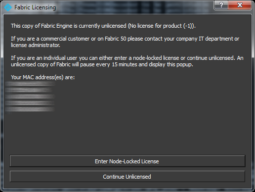

Fabric Engine ライセンスのインストール¶
ライセンス抜きにDCC統合版もしくはスタンドアロン版Fabricを使用すると、Fabric Licensingダイアログが出ます:
individual かつノードロックライセンスを必要であれば、追加情報は www.fabricengine.com にあります。ほかのタイプのライセンスが必要であれば sales@fabricengine.com までコンタクトをとってください。どちらのケースでもライセンスの取得には MACアドレスが必要となります。MACアドレスはFabric Licensingダイアログからコピーが可能です。
すでにノードロックライセンスを所持しているのであれば、”Enter Node-Locked License”ボタンをクリックしてください。

このダイアログに取得済みライセンステキストを入力し、OKボタンをクリックすると、ライセンスをインストールできます。Windowsでは、ライセンスは%AppData%/Fabric Engine/rlm へ、 Linux, Mac OS Xでは ~/.fabric-engine/rlm ディレクトリに格納されます。この”Enter Node-Locked License”ダイアログへの入力操作は、起動前に先行し先述の場所へ .licファイルを置くことでスキップすが可能です。Fabric を再起動すると、入力されたライセンスを読み直します。
Fabricはライセンスがない状態でも起動可能です。ライセンスがない状態で起動を続けると、Fabricより15分に15秒間のポーズ時間が挟まります。

注釈
より詳細なライセンスについての技術文書は Licensing Guide を参照してください。